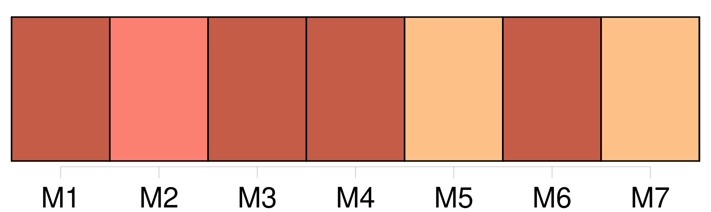
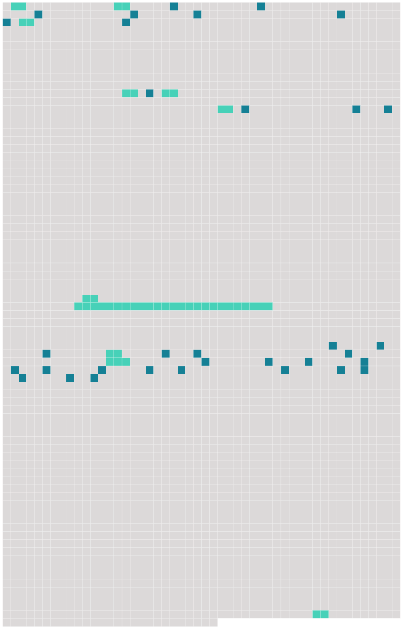

Longueur nb maillons : 44 mentions |
  |
— [Mon oncle] !! [1 phrases]
Et le flambeau qu'il tenait éclaira [un monsieur] Des favoris rouges élargissaient [son] visage surmonté d'un toupet frisant par la pointe. [Sa] haute cravate, avec le triple col de la chemise, du gilet de velours et de l'habit noir, [l'] engonçaient. [1 phrases]
[Ses] yeux étaient bridés aux pommettes, et [il] souriait d'un petit air narquois.
Pécuchet ne put s'empêcher de dire : — [C'] est [mon parrain] , répliqua Bouvard négligemment, ajoutant qu'il s'appelait de [ses] noms de baptême François-Denys-Bartholomée. [24 phrases] [Un homme] , [qui] était [son oncle] , l'avait emmené à Paris pour lui apprendre le commerce. [5 phrases] Quant à [son oncle] , [qui] autrefois lui avait expédié comme souvenir le fameux portrait, Bouvard ignorait même [sa] résidence et n' [en] attendait plus rien. [74 phrases] — [Mon oncle] est mort!! [3 phrases]
« Monsieur, [22 phrases]
Le notaire envoya la copie du testament, lequel se terminait ainsi :
» Vers la quarantaine, [M. Bouvard] s'était marié, puis était devenu veuf. [Ses] deux fils légitimes ayant tourné contrairement à [ses] vues, un remords [l'] avait pris sur l'abandon où [il] laissait depuis tant d'années [son] autre enfant. [Il] l'eût même fait venir chez [lui] , sans l'influence de [sa] cuisinière. Elle [le] quitta, grâce aux manœuvres de la famille, et, dans [son] isolement, près de mourir, [il] voulut réparer [ses] torts en léguant au fruit de [ses] premières amours tout ce qu' [il] pouvait de [sa] fortune. [76 phrases] Mais le portrait de [son père] , les fauteuils, la cave à liqueurs, les bouquins, la pendule, tous les objets précieux furent mis dans une voiture de déménagement qui s'acheminerait par Nonancourt, Verneuil et Falaise. |
 |
La ressource peut être téléchargée sur la page Ortolang
Si vous avez des questions ou vous voyez des erreurs, merci d'envoyer un mail à silvia.federzoni89@gmail.com
Site développé par S. Federzoni (contact)